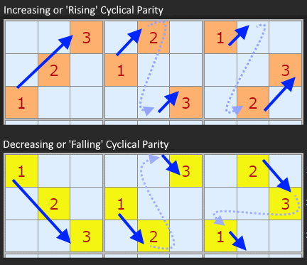
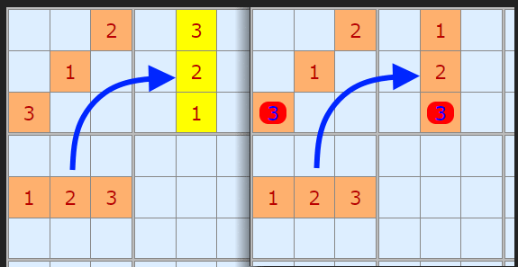
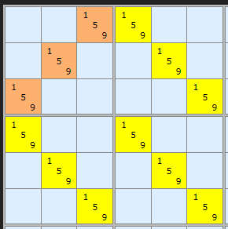
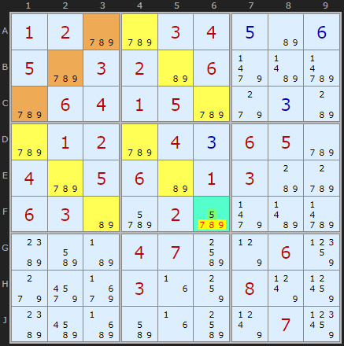
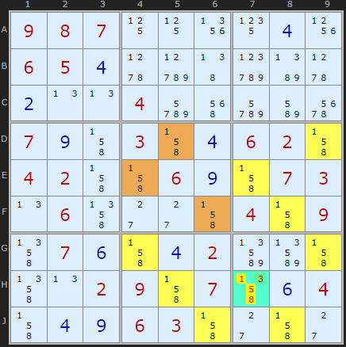
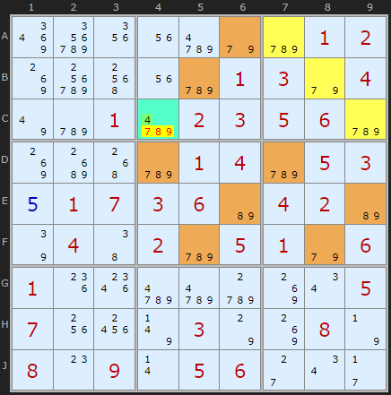
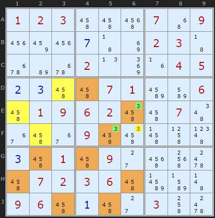

SudokuWiki.org
Strategies for Popular Number Puzzles
Tridagons
The Tridagon (a.k.a."Thor's Hammer") is a pattern first described by Denis Berthier and much developed on New Sudoku Player's Forum between 2022 and 2025. I have been reluctant at first to include it as it seemed contrived - relying on a spread of candidates that are very unlikely to appear in randomly created puzzles, let alone published ones. But people have generated long lists of puzzles where Tridagon is necessary and as this site is (partially) devoted to exploring the very hardest puzzles, I rolled up my sleeves and got stuck in. I am going to follow the outline given on Phil's Folly as it compresses the pattern down to it's essence and by-passes a lot of speculative development.
While it has a distinctive pattern it is a difficult strategy to prove logically. I've found Ryokousha's Cyclical Parity theory the most convincing (good links to further reading on the forum) and Rangsk's video on this very watchable.
While it has a distinctive pattern it is a difficult strategy to prove logically. I've found Ryokousha's Cyclical Parity theory the most convincing (good links to further reading on the forum) and Rangsk's video on this very watchable.
Cyclical Parity

All six patterns are either rising or falling so we can think of their "parity". If rising they go 1 to 2 and 2 to 3 and 3 to 1 since it is "cyclical". Hence the theory talks of these boxes having "cyclical parity".
Next, for every set of three numbers we are interested in how to fill each stack (three vertical boxes) and band (three horizonal boxes). It is a property of Sudoku that
- All rising patterns have a different parity for the band and the stack
- All falling patterns have the same parity for the band and the stack

So how is this useful? If you have a rising pattern in box 4 (doesn't matter which, so drawing it in a line) and you have a rising pattern in box 1 – the diagonal – we are forced to consider a falling pattern for box 2. Which I've coloured in yellow. If we try another rising pattern there is no way to fit {1,2,3} into box 1 that doesn't cause a conflict.

To save the puzzle from having zero solutions some additional candidates are required to be present on one of the cells in the pattern. If there is one cell with any number of additional candidates that cell can have the triple removed from it. These extra candidates are called Guardians.
The pattern that stood out when first identified looked a little like "Thor's Hammer" so that is another name of this strategy.
Examples

There is a single 5 guardian in F6 which must be the solution to this cell.
It is not a difficult pattern to spot so the solver tries at the start of the 'diabolicals'. But I've bundled it under "various static patterns' as I don't think it will be discovered much outside the test lists.

Just to emphasis that the patterns within each box can be any of the three suitable for the parity. Not just straight diagonals.

It is important to appreciate the the triples are similar to Naked and Hidden Triples. In that it matters there are three numbers IN TOTAL across three cells, not that there are the same three numbers IN EACH cell. So while most examples will be {123} + {123} + {123} it could be as sparse as {12} + {13} + {23}.
Here is an example: 4 found to be the solution in C4.
More than one Guardian

Phil on Phil's Folly encourages us to think of A and B as a new link and try to use it in a chain such as an AIC. That is a tough programming challenge.
But if A and B are the same number and can see each other they become a Pointing Pair. We can remove other candidates in the same box, and along the row and column if the pair are suitably aligned. However the number of useful instances of this are very low. Running through a one Tridagon test file where I found 15,500 useful Tridagons in 33,600 puzzles, I extracted just 22 Pointing Pair eliminations. This is one example.
Comments
Email addresses are never displayed, but they are required to confirm your comments. When you enter your name and email address, you'll be sent a link to confirm your comment. Line breaks and paragraphs are automatically converted - no need to use <p> or <br> tags.
... by: tebo
... by: TenPeter
An example where the cyclical parity proof is problematic is puzzle Type 3 #10 from Phil's Folly website.
740058900908607500065940700087005000609800000450090000806000400000000003000080601
This puzzle has 2 overlapping Tridagon patterns each with three guardians. One of the Tridagon pattern has a rising triple and the other has a falling triplet. They are in the same block and both patterns have to be "broken" to solve the puzzle. It is actually very easy to solve.
... by: Anonymous
One of the examples from Phil's folly:
........1.....2.3...4.15.......346...47..8.1.6.31.78...78...1.63...8..744.67.138.
After applying basic strategies, there is a tridagon pattern on candidates 259 in boxes 4679, with 2 guardians digits: 1 in r4c3 and 1 in r8c3. Since the guardians are all the same digit, and since the candidate 1 in r2c3 sees all of the guardians, it should be eliminated.
... by: Davin
It doesn't force >1 solutions, it is straight up not solvable (i.e. forces 0 solutions). It is not a uniqueness strategy.
Billablog has a nice writeup on Tridagons here, with a proof of why it works:
https://billerbop.blogspot.com/2025/08/solving-loki-119-with-oddagons.html
Goes into great detail about Oddagons, and an application of it to Loki, an SE 11.9 puzzle (the highest known SE grade) that is completely dismantled by Oddagons.